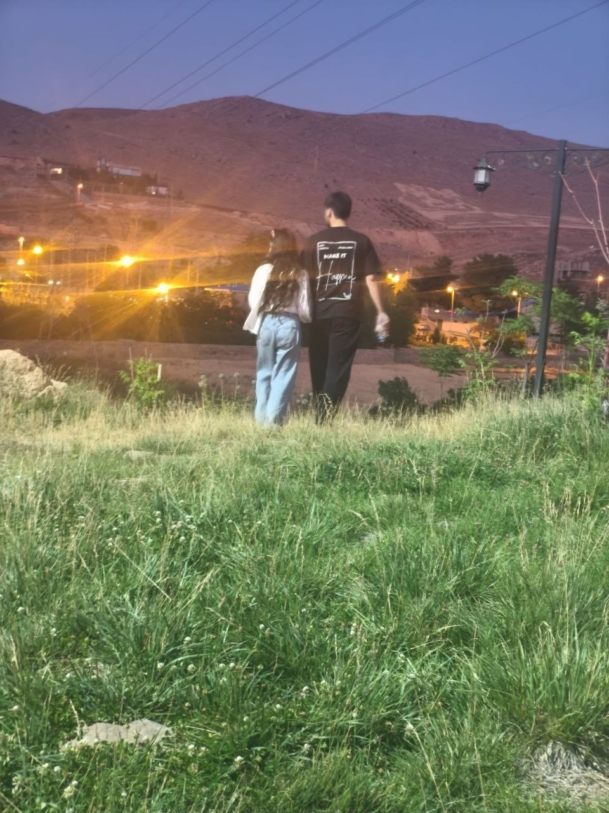
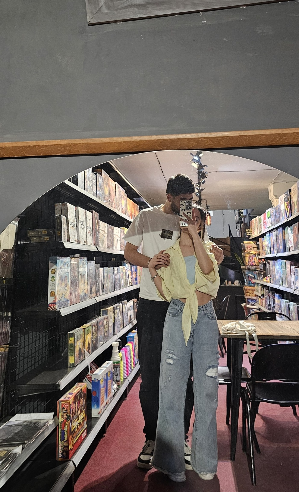
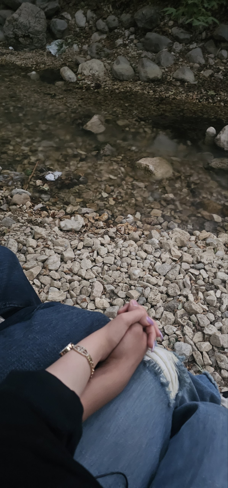
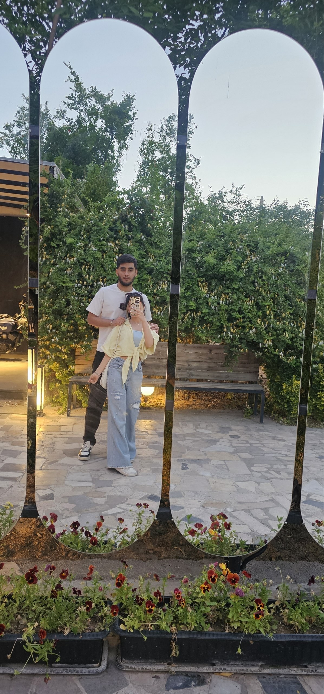
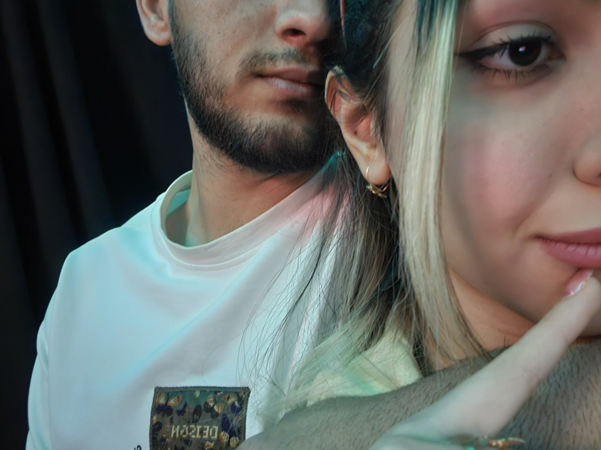
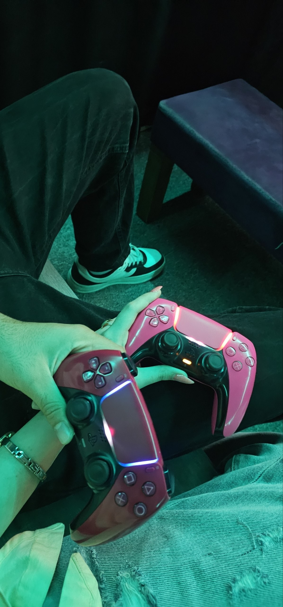
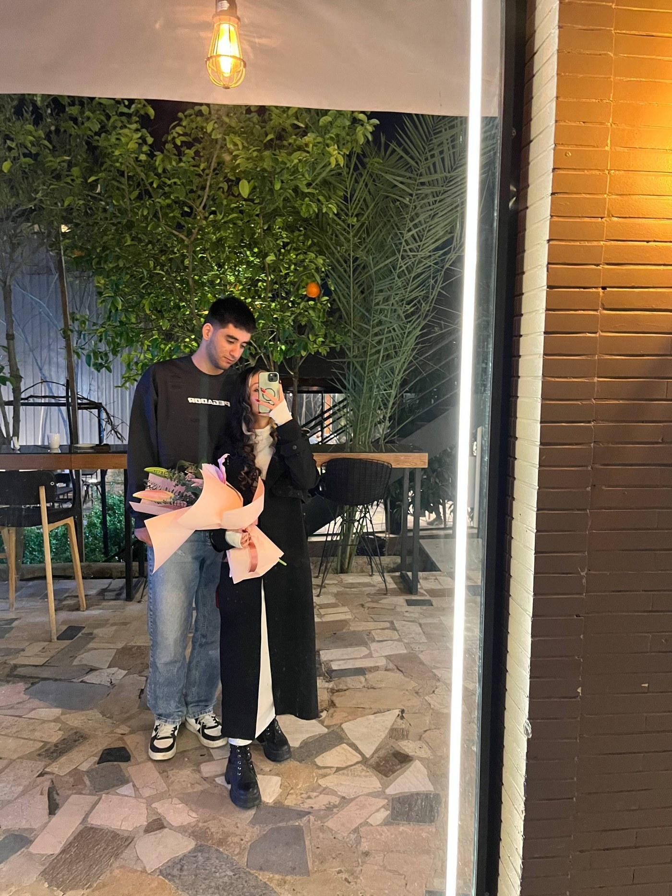
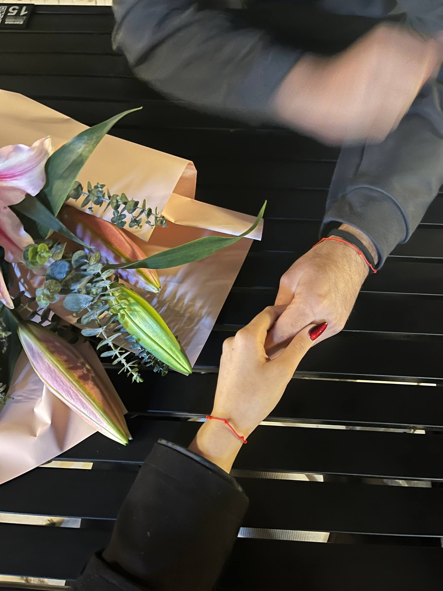
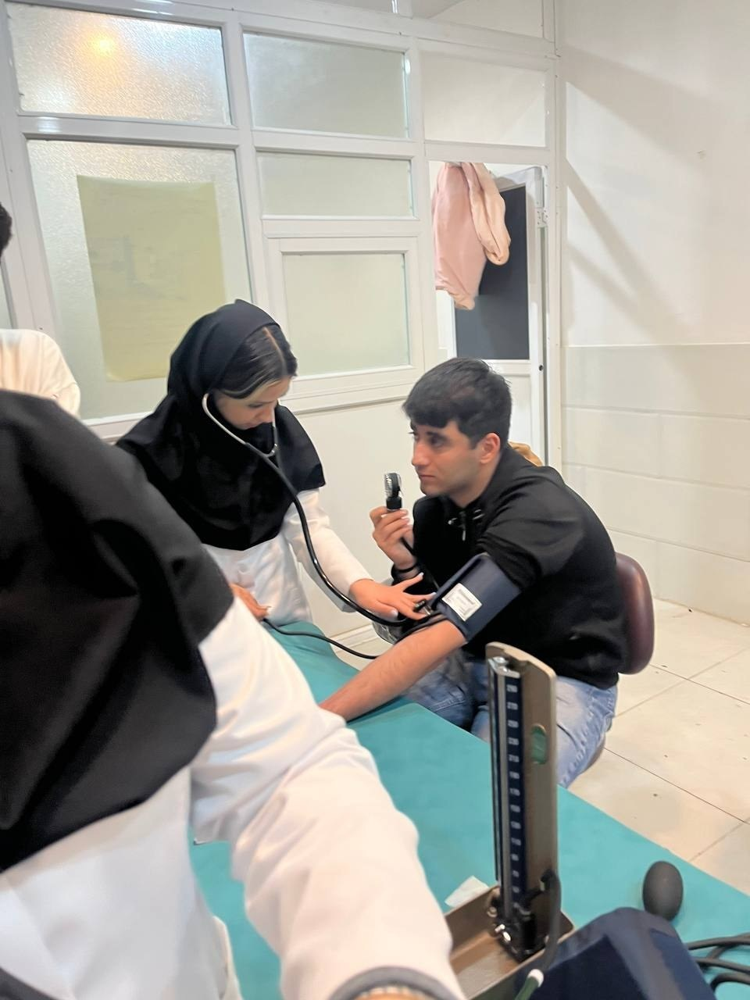

شروع داستان
روزی که «ما» شکل گرفت.
یک گوشه کوچک از دنیای ما
یک سایت کوچک برای یک آدم بزرگ در قلب من.
بعضی آدمها آرامآرام وارد زندگی میشوند و بعد یک روز میبینی که دیگر خیلی از چیزهای معمولی، بدون آنها معمولی نیست.
این صفحه برای ثبت همه آن چیزهایی است که شاید در یک عکس جا نشوند؛ خندهها، حرفها، دلخوریها، آشتیها و لحظههایی که فقط خودمان معنیشان را میدانیم.
روزی که «ما» شکل گرفت.
حرفهای طولانی، خندهها و لحظههایی که کمکم تبدیل به خاطره شدند.
هشت ماه از داستانی که هر روزش یک خاطره تازه ساخت.
این قسمت هنوز نوشته نشده؛ چون داستان ما تمام نشده.
نه برای اینکه فراموش نکنیم؛ برای اینکه هر وقت دلمان خواست، برگردیم به این لحظهها.









اگر یک روز از من بپرسی چرا تو، شاید نتوانم یک جواب کوتاه پیدا کنم.
شاید چون خندهات را دوست دارم. شاید چون چشمهایت، موهایت و حتی همان لجبازیهای کوچکت برای من بخشی از تصویری شده که از «تو» دارم.
اما شاید سادهترین جواب این باشد: چون بین تمام آدمها، تو تبدیل شدی به یک حس آشنا؛ چیزی که دلم نمیخواهد از دستش بدهم.
اگر آهنگ مخصوص خودتان را داری، فایلش را با نام our-song.mp3 کنار سایت قرار بده.
فایل نمونه فعلاً خالی است و میتوانی آهنگ خودتان را جایگزینش کنی.
اگر این صفحه را پیدا کردی، یعنی وارد قسمت کوچکی شدی که برای هیچکس دیگری ساخته نشده.
این بخش در نسخه فعلی فقط ظاهری است؛ برای اطلاعات خیلی خصوصی، باید احراز هویت واقعی سمت سرور اضافه شود.